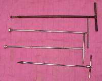
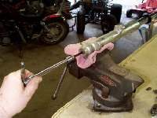
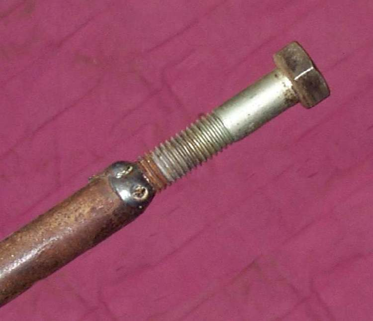

The hex bolt in the bottom of many fork legs screws into a damper rod inside the leg. When the bolt is tight, the rod can spin with it and the bolt will not move. This page shows how to hold the rod so the bolt can be undone. It is one step of Replace fork oil and seals, which this site treats as a workshop job.
Safety
- Support the bike so it cannot fall with the front wheel off.
- Do not use a hammer on the hex bolt, the leg or the rod. Do not drill or cut anything before a workshop has looked at it.
- Drain fork oil into a pan and keep it off the brake disc and pads.
You need
- A hex key or socket that fits the bolt exactly. A worn or loose key rounds the bolt.
- A holder for the damper rod, if the spring alone does not hold it. Some are sold for specific forks. A simple one can be made from a steel rod or pipe with a bolt end cut to match the rod head. Check the fit against your fork first.
- Thread locker for the refit.
Steps
- Remove the fork leg from the bike as the workshop manual describes. Pour out as much oil as you can.
- Fit the spring back in the leg and fit the top cap, if you removed them. The spring pressing on the rod is often enough to stop it spinning.
- Stand the leg upright and put the key or socket on the bottom bolt. Turn it with a steady push. An impact driver can help because it shakes the rod loose without turning it.
- If the rod still turns, fit the holder through the top of the leg onto the rod head. Hold the holder still and turn the bolt.
- Loosen the bolt a few turns, then let more oil drain before you take it out.
- Refit with thread locker and a new sealing washer if the bolt had one. Tighten to the value in your bike's manual.
Check your work
- The bolt came out without a rounded head.
- The damper rod and its seat show no scoring or bending.
- On refit the bolt is tight and the leg holds oil after a few days of riding.
If it did not fix the problem
- The bolt is rounded or seized: take the leg to a workshop. A seized bolt may need drilling out, which can ruin the damper if done badly.
- The leg is still dry but the fork leaks again after the job: Fork leaks again after new seals.
- The fork feels sticky after reassembly: Front forks feel sticky or stiff.